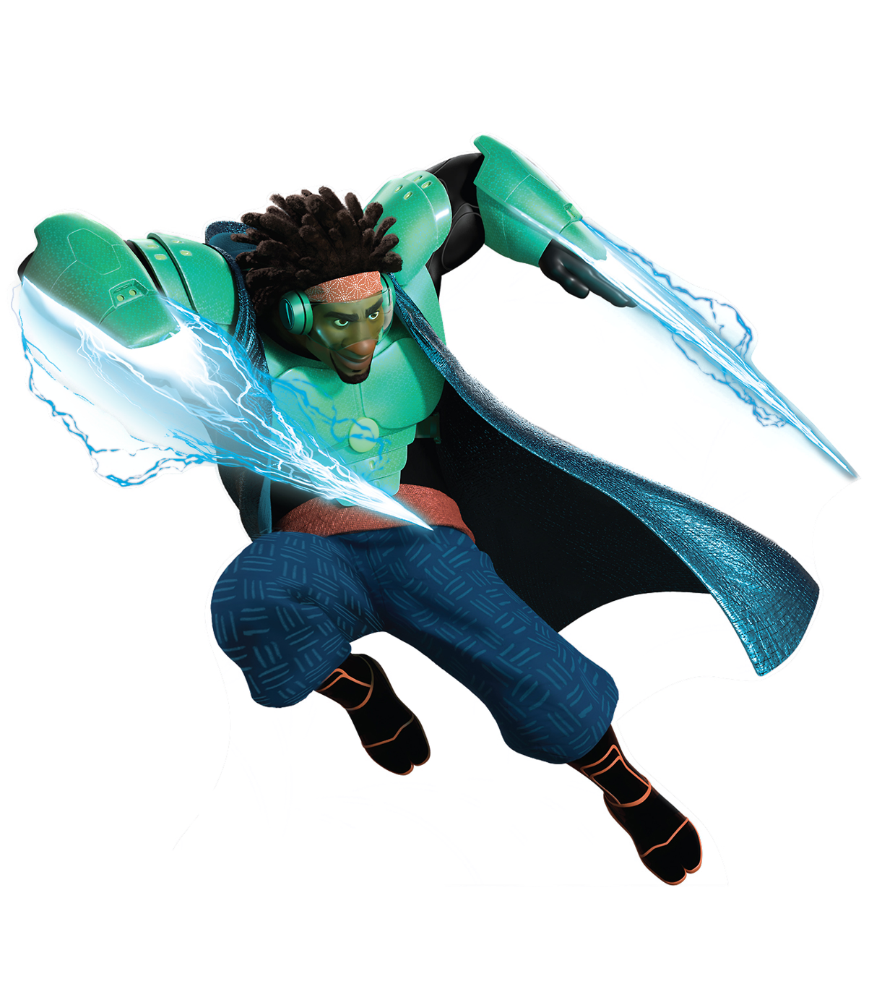
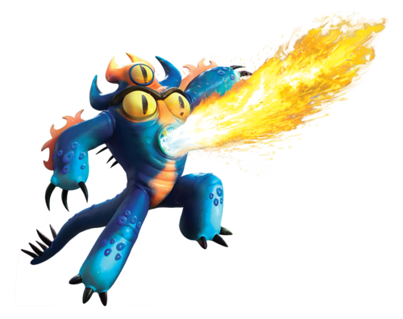
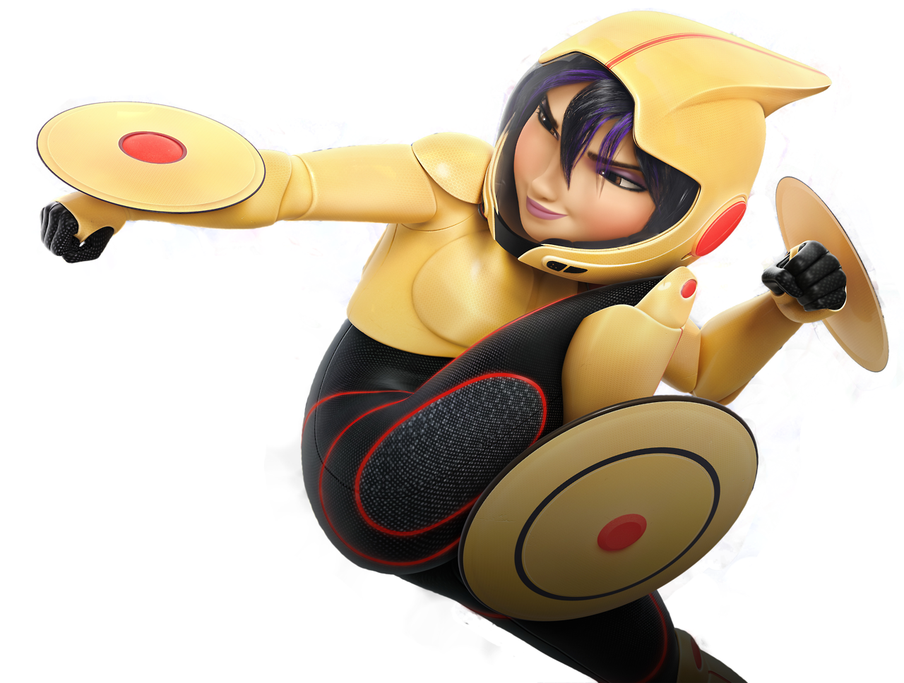
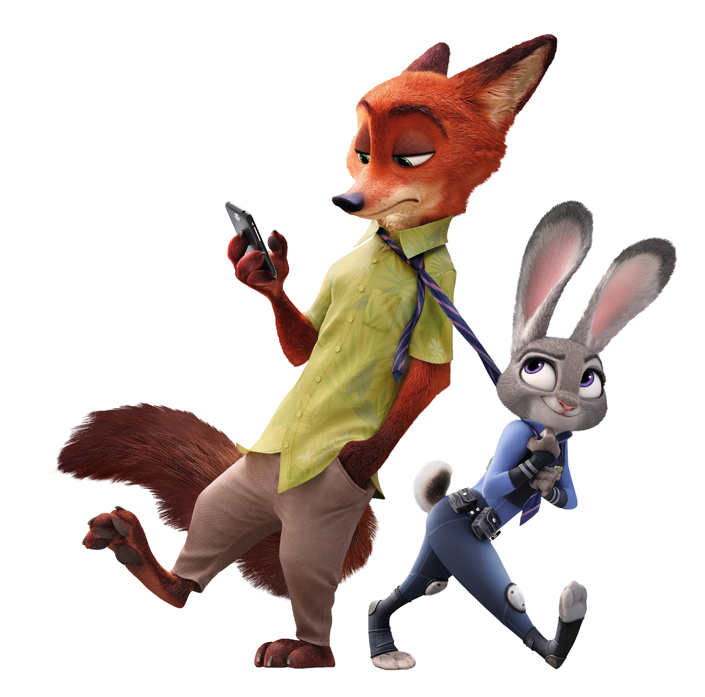

jasfksjfskldfjdsklfjsdklfjfcfhvjbknm njknuibhecdcvftghjlvceesd
Hiro is a fast-talking intelligent teenage boy who wants justice for his brother after he finds out his boss kills him to steal his inventions. And to help bring him to justice he creates a superhero team including his brothers robot Baymax.

Honey Lemon is a charasmatic character that has a serious love for chemistry and she found a way to
use that to help Hiro bring justice for his brother. So she has this purse that she uses to combine
elements that turns into balls and she throws them at the villain.

Wasabi also known as Wasabi-No-Go helps Hiro by using his intelligence and refined skill in using lasers.
He has this costume that provides all these types of different blades for him and it can almost go through
anything. Because of this Wasabi-No-Go is the most powerful on the team along with Baymax.

Fred has this supersuit that spits out fire and with that idea he creates the name Fredzilla. Along with
his intriguing super cool dance moves the suit gives him other powers like super jump, fire breath, Night
Vision, and Flame Resistence which protects him fire in attacks.

Gogo Tomango is an expert driver, her suit makes her have enhanced reflexes and speed. She is
a know it all in mechanical engineering and loves her sports.The main part of her suit are the Mag-Lev
Discs, which basically not only act as transportation but can also be flung to opponents and magnetically
return to the suit after hitting their target, causing large damage to the target in the process.
 The Incredibles are a family of 5 and their type of family reunion is when they fight crime together.
Mr. Incredile has superhuman strength, Elasticgirl can touch you from where ever you are because
her whole body is elastic. Violet, can turn invisible and create a force-field
generation that can protect her and her family, and lastly Dash has the powers of super speed.
The Incredibles are a family of 5 and their type of family reunion is when they fight crime together.
Mr. Incredile has superhuman strength, Elasticgirl can touch you from where ever you are because
her whole body is elastic. Violet, can turn invisible and create a force-field
generation that can protect her and her family, and lastly Dash has the powers of super speed.
 In Zootopia these two characters named Judy and Nick come together and figure out that there is a bunch of missing animals and because they're predators and turn savage they're not the police's top priority. So they take it upon themselves to find every single one of them.
 Baloo who is the bear and Bagheera which is the panther helps Mowgli, the child who was raised by wolves,
has his peaceful existence who is threatened by the man-eating tiger Shere Khan. Since
the tiger wants him dead Baloo and Bagheera help him stay by defeating Shere Khan.
Baloo who is the bear and Bagheera which is the panther helps Mowgli, the child who was raised by wolves,
has his peaceful existence who is threatened by the man-eating tiger Shere Khan. Since
the tiger wants him dead Baloo and Bagheera help him stay by defeating Shere Khan.